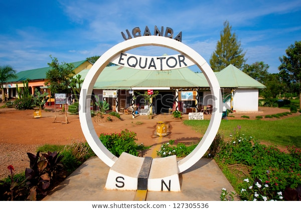
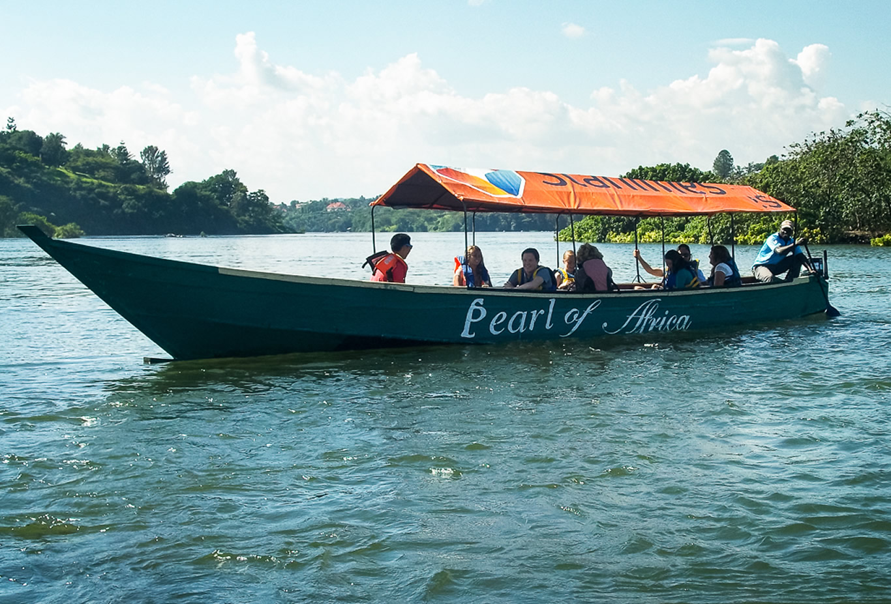
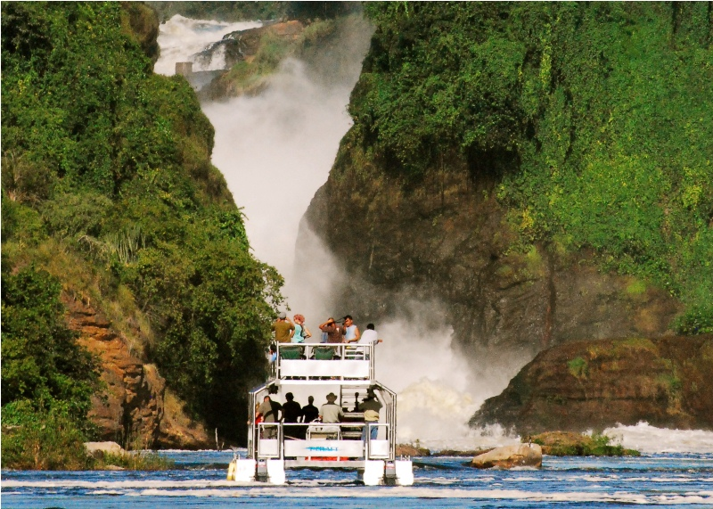
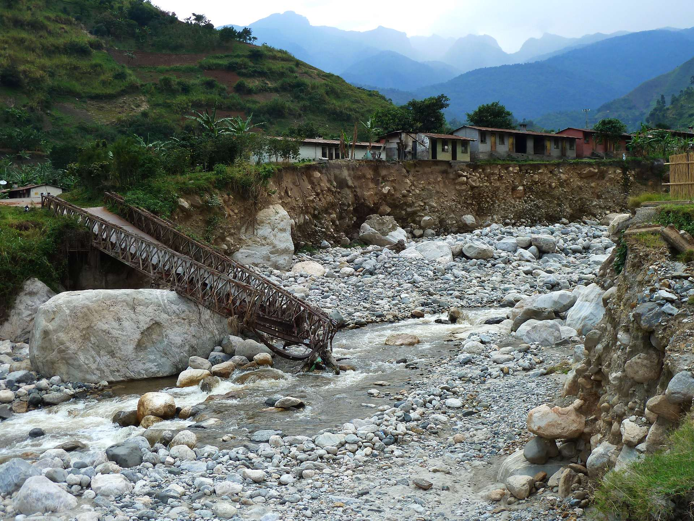
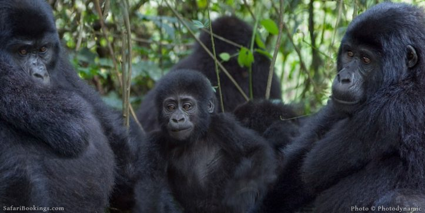
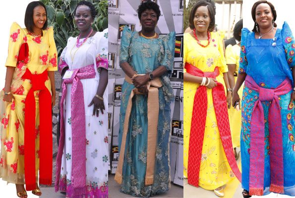

About uganda
Uganda is the Pearl of Africa, a country with fantastic natural scenery and a rich mosaic of tribes and cultures. From the moment you land at Entebbe's modern and efficient international airport, with its breathtaking equatorial location on the forested shore of island-strewn Lake Victoria, it is clear that Uganda is no ordinary safari destination. Travelling through the country you will be captivated by its beauty, overwhelmed by the friendliness of its people and intrigued by all that Uganda has to offer
Uganda lies astride the Equator in Eastern Africa at an average altitiude of 1,100 m above sea-level and is bordered by South Sudan to the North, Kenya
here
EQUATOR

The Uganda Equator is situated at a place called Kayabwe in Mpigi District,
approximately 75 kilometers from Kampala city by road. You will experience
one of the warmest temperatures while at the Equator as
you position yourself in the middle of the world
RIVER NILE

The Nile River is the longest river in the world.
The Nile flows into the Mediterranean Sea.
The Nile has a length of about 6,695 kilometers (4,160 miles)
Its average discharge is 3.1 million litres (680,000 gallons) per second.
The Nile basin is huge and includes parts of Tanzania, Burundi, Rwanda, Congo (Kinshasa), Kenya.
The Nile receives its name from the Greek Neilos, which means a valley or river valley.
MACSHOON FALLS

The initial fall of 130 feet (40 metres) is generally recognized as
Murchison (Kabalega) Falls. The cataract forms the central feature
of the Murchison Falls National Park (established 1952), which
occupies an area of 1,483 square miles (3,840 square km) of rolling grassland.
The English traveler Sir Samuel White Baker visited the falls in the
mid-1860s and named them for the geologist Sir Roderick Murchison.
COPPER MINES

Kilembe Mines is Uganda's largest copper mine, with estimated deposits
of copper in excess of 4,000,000 tonnes and an undetermined amount
of cobalt ore. In addition, there approximately 2,800 acres
(1,100 ha), of unexplored acreage at the site
BWINDI NATIONAL PARK

The Bwindi Impenetrable Forest is a large primeval forest
located in south-western Uganda in the Kanungu District.
The forest is on the edge of the Albertine Rift, the western branch of
the East African Rift, at elevations ranging from 1,160 to 2,607 metres.
TRADITION WARES

The gomesi was originally made from imported cotton fabric,
with the aim of providing a loose garment that covered the breast.
Today the gomesi is the Kiganda traditional dress for women
and is also worn by other ethnicities in Uganda.